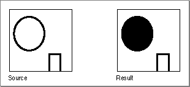

CalcMask
To determine where filling will not occur when filling from the outside of a rectangle, use theCalcMaskprocedure.PROCEDURE CalcMask (srcPtr,dstPtr:�Ptr; srcRow,dstRow,height,words:�Integer);
srcPtr- A pointer to the source bit image.
dstPtr- A pointer to the destination bit image.
srcRow- Row width of the source bitmap.
dstRow- Row width of the destination bitmap.
height- Height (in pixels) of the fill rectangle
.words- Width (in words) of the fill rectangle.
DESCRIPTION
TheCalcMaskprocedure produces a bit image with 1's in all pixels to which paint could not flow from any of the outer edges of the rectangle. You can use this bit image as a mask with theCopyBitsorCopyMaskprocedure. As illustrated in Figure 3-26, a hollow object produces a solid mask, but an open object produces a mask of itself.Figure 3-26 A source image and the resulting mask produced by the
CalcMaskprocedure
As with theSeedFillprocedure, point to the bit image you want to fill with thesrcPtrparameter, which can point to the image's base address or a word boundary within the image. Specify a pixel height and word width with theheightandwordsparameters to define a fill rectangle that delimits the area you want to fill. The fill rectangle can be the entire bit image or a subset of it. Point to a destination image with thedstPtrparameter. Specify the row widths of the source and destination bitmaps (theirrowBytesvalues) with thesrcRowanddstRowparameters. (The bitmaps can be different sizes, but they must be large enough to contain the fill rectangle at the origins specified bysrcPtranddstPtr.)Figure 3-25 on page 3-106 illustrates the parameters for the source and destination bit images.
Calls to
CalcMaskare not clipped to the current port and are not stored into QuickDraw pictures.SEE ALSO
For color graphics ports, use theCalcCMaskprocedure, which is described in the chapter "Color QuickDraw."